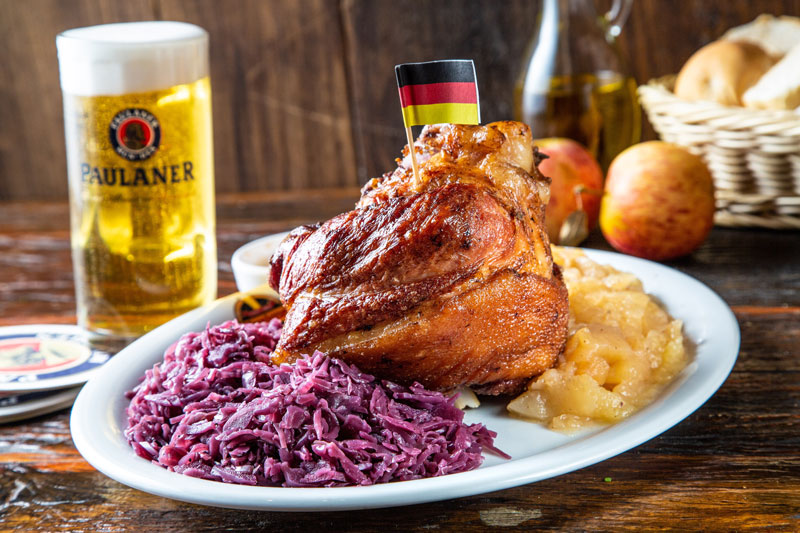

Sauerkraut(Chucrute)
Ingredientes
- 1 repolho grande
- 2 xícaras (chá) de água
- 1 colher (chá) de sal
- 3 colheres (sopa) de óleo
- 1 ou 2 dentes de alho
- 2 cebolas médias
- 1 colher (café) de pimenta-do-reino
- 2 folhas de louro
- 12 cravos
- 1/4 de xícara (chá) de açúcar
- 1 gengibre pequeno esmagado
- 2 xícaras (chá) de vinho branco seco ou vinagre
- 1/4 de xícara (chá) de farinha de trigo
- 1 xícara (chá) de creme ácido
Modo de preparo
- Cortar o repolho em tirinhas. Numa panela a água e o sal e aferventar o repolho picado. À parte, fazer o refogado com o óleo, o alho esmagado, e as cebolas picadas. Quando as cebolas começarem a dourar, acrescentar a pimenta-do-reino, o louro, os cravos, o açúcar e o gengibre.
- Juntar o vinho (ou vinagre), a farinha de trigo e o creme ácido. Misturar com o repolho aferventado e escorrido. Pode ser servido com carne de porco, de preferência costelas de porco.
Kartoffelsalat(Salada de batata)
Ingredientes
- 1 quilograma de batata
- 1 cebola
- 125 mililitros de caldo de legumes
- 1 pitada de noz moscada
- 1 fio de óleo
- 1 fio de vinagre de vinho branco
- 1 colher de sopa de mostarda
- sal
- pimenta do reino moída na hora
- coentro picadinho
Modo de preparo
- Comece separando os ingredientes. A batata deve ser cozida na água por mais ou menos 20 minutos - ela precisa estar cozida mas firme o suficiente para ser cortada e manter a forma. Já a cebola deve ser picadinha.
- Enquanto as batatas cozinham e esfriam, prepare o molho. Coloque todos os demais ingredientes em uma tigela grande: cebola picada, caldo de legumes (que precisa estar quente), óleo, vinagre e a mostarda. Finalize com noz moscada ralada, sal e pimenta do reino moída na hora a gosto. Misture e reserve.
- Quando as batatas estiverem frias o suficiente para manusear, corte-as em rodelas.
- Acrescente as batatas na tigela e misture bem, para o molho chegar em todas as rodelas.
- E finalize como desejar - aqui optei por um pouco de coentro picadinho para dar uma cor à salada de batata. Ela pode ser servida quente ou fria e é ótima para acompanhar o churrasco, um peixe assado ou, se você quiser uma verdadeira imersão na cultura alemã, com salsichas.
- O importante é ter na manga esse coringa sempre que você precisar de um acompanhamento com sabor e fácil de preparar. Conta pra gente nos comentários o que você achou dessa receita de salada de batata alemã kartoffelsalat.
Currywurst(Salsicha de porco)
Ingredientes
- 1 cebola cortada em tiras finas
- 1 ramo de alecrim
- 2 folhas de louro
- 30g de manteiga
- 2 colheres (sopa) de extrato de tomate
- 4 colheres (sopa) de catchup
- 250 ml de caldo de carne
- 1 colher (chá) de molho inglês
- 1 colher (sopa) de molho barbecue
- 1 unidade (150 g) de salsichas branca
- 1 colher (chá) de curry
- Óleo para fritar
Modo de preparo
- Refogar a cebola, o alecrim e a folha de louro na manteiga até a cebola dourar.
- Acrescentar o extrato de tomate e mexer bastante, refogar por 5 minutos.
- Deglaçar com o caldo de carne e acrescentar em seguida os outros molhos com uma pitada de curry.
- Ferver por 10 minutos e peneirar em seguida. Numa frigideira grande fritar as salsichas de todos os lados em um pouco de óleo até dourar.
- Cortar em rodelas maiores e dispor numa travessa coberta com o molho e salpicar o resto do curry sobre o molho.
Schnitzel(Carne empanada)
Ingredientes
- 200 gramas de filé de lombo de porco (2 unidades cortadas finas)
- 1/4 xícara de farinha de trigo
- 1/4 xícara de farinha de rosca/pão ralado
- 1 unidade ovos
- 1/2 unidade de limão siciliano/limão amarelo
- Sal
- de pimenta-preta/pimenta-do-reino
- 1 xícara de óleo vegetal neutro (canola, girassol, milho, etc)
Modo de preparo
- Martelar: coloque os filés sobre uma camada de filme plástico. Tempere-os com sal e pimenta dos dois lados. Cubra com outra camada de filme plástico e bata levemente, utilizando o martelo. Eles devem ser finos, mas não quebradiços
- Esquentar óleo: em um frigideira média, coloque óleo suficiente para que o schnitzel possa "boiar" um pouco, ou ele irá queimar – em uma frigideira média 1 xícara de óleo é suficiente. Deixe esquentar até ficar bem quente, 170 graus Celsius
- Milanesa: organize 3 pratos e coloque em cada um deles: farinha de trigo, ovo mexido e farinha de rosca (pão ralado). Tempere as 3 misturas com um pouco de sal e de pimenta-do-reino, ou o schnitzel ficará sem sabor
- passe os dois lados da carne pela farinha de trigo, bata um pouco com as mãos para retirar o excesso de farinha
- passe os dois lado da carne pelo ovo mexido; deixe escorrer bem para retirar o excesso de ovo mexido
- passe os dois lados da carne pela farinha de rosca (pão ralado); não aperte a carne, mas vire alguma vezes para que toda a carne esteja coberta pela farinha
- Fritar: leve o schnitzel diretamente para a frigideira com óleo quente e frite por cerca de 2 a 3 minutos de cada lado, até ficar dourado, mas não queimado; mexa um pouco para que não grude e queime
- Secar: seque em toalha absorvente por alguns segundos de cada lado
- Servir: sirva imediatamente com fatias de limão e folhas de salsinha
Eisbein(Joelho de porco)

Ingredientes
- 500 gramas de joelho de porco
- 1 unidade de cebola picada
- 3 dentes de alho picado
- 2 colheres de sopa de mistura de ervas aromáticas secas
- 1/2 xícara de suco de limão
- 2 folhas de louro
- 1 pitada de sal
- 1 pitada de pimenta do reino
Modo de preparo
- Para que seu joelho de porco fique realmente saboroso, o ideal é que o coloque marinando em um refratário com todos os ingredientes durante 1 dia, ou durante a noite. Você pode fazer isso numa tigela ou num saco de plástico fechado, como preferir.
- Dê início à receita colocando o joelho de porco e todos os ingredientes da marinada a cozinhar durante 30-40 minutos numa panela de pressão. Como alternativa, cozinhe em fogo médio até a carne soltar do osso.
- Nesse momento o joelho de porco estará pronto, porém você pode conferir um aspeto dourado e mais apetitoso se o levar a assar no forno a 200ºC durante cerca de 30 minutos.
- Sirva o joelho de porco com chucrute e batatas cozidas. Bom apetite!